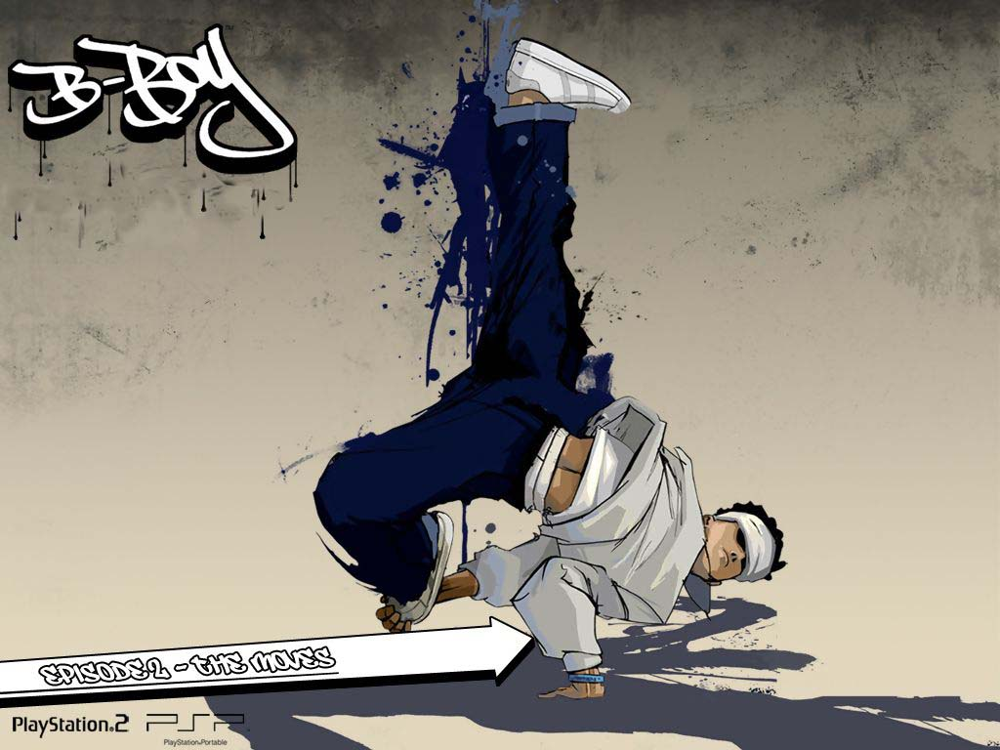

当前位置：首页>舞种介绍
舞种介绍
街舞风采网 2017-06-15
Breaking
一种难度较高的街舞种，比较重视舞步和技巧的结合，主要由TopRock、UpRock、Footwork、Powermoves、Freeze等几类不同的舞蹈方式所组成。DJ中一个名为Kool Herc的佼佼者发明了将两张唱盘的间奏部分拼接起来以获得更长的跳舞时间的方式，并由此产生了Break Beat这种音乐形式。而在这种间奏时间里跳舞的人就被称之为间奏男孩Break Boy，即B Boy（breaker），而B Boy所跳的舞蹈便被称之为B Boying，并在之后的商业化宣传中被称为Breaking并通行至今。Breaking分成大地板（power move）和小地板（style move）。大地板以连续并互相连结的旋转动作为主，小地板以连续动作后突然静止或其他具个人特色的动作为主。它的创始人是美国东海岸黑人歌星詹姆斯·布劳德。他当时在电视上唱新歌，自己创作了一种希奇古怪的动作，青年们竞相模仿，并在街头进行跳舞比赛。这种舞蹈传到西海岸洛杉矶后，又出现了模仿木偶机器人动作的舞蹈。美国东西两岸两大派街头舞蹈结合起来，深受青年们的欢迎，因这种舞蹈大都在街头表演，故又称“街头舞蹈”。
Hiphop
Hip-Hop是现在广泛流行的街舞类型，嘻哈舞最开始的原本意指B-Boy，后来才有人用MC唱的歌来跳舞，所以说跳Hip-Hop其实是一种后来的说法，bboy才是Hip-Hop的起源。嘻哈舞的特色是爆发力强，在舞动时，肢体所做的动作亦较其他舞蹈夸张。最吸引人之处，是以全身的活力带来热情澎湃的感觉。Hip-Hop可主要分为两大类：1、Old School Hip-Hop包含：Locking、Popping、Breaking、Wave等舞种，起源于美国街头，多为黑人和墨西哥人，他们常常在街上舞蹈，自然而然形成各种派系，发展成不同风格。到现在，许多舞者或媒体都习惯的将其成为New York Style，可谓是街舞大串联，身体的扭动和原地性的动作结合Popping、Locking等风格，使其看起来随性自然。2、New School Hip-Hop是由Old School Hip-Hop演变而来，具体因为New School使用的音乐多为慢板Hip-Hop或RB，这些音乐并不适合做出类似Breaking中很多的地板动作，所以慢慢的分成了两种派系。如今也习惯将其成为L.AStyle，大幅度动作加上脚步的变化性，更注重身体的律动性，可以说是用新的觉来诠释老派的舞步。